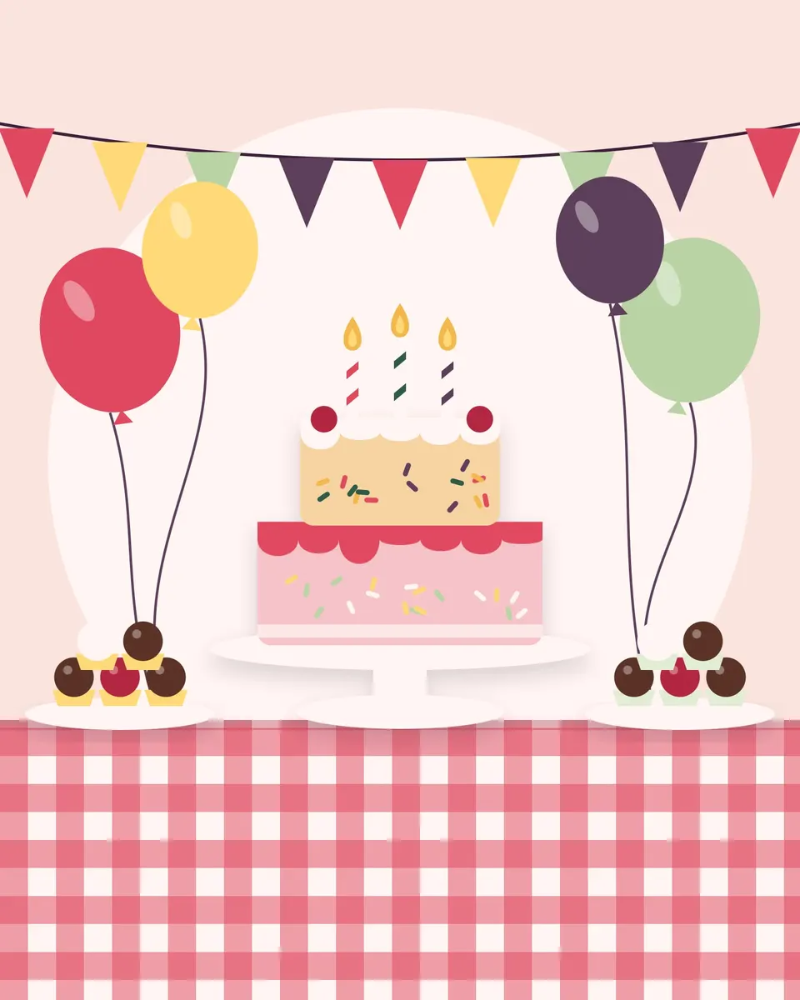
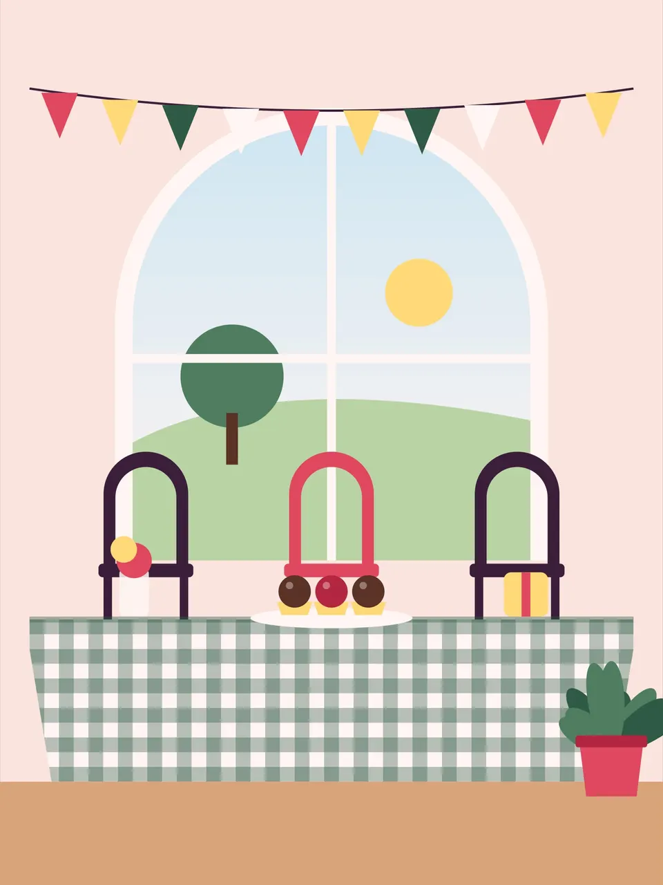

Festas intimistas
Um espaço dedicado a apresentar a proposta de comemorações em formato intimista.
Em Itu, o Villa Fun apresenta uma proposta de festas infantis intimistas com gastronomia afetiva. Uma comemoração para aproveitar com quem está por perto.

Imagens ilustrativas, não oficiaisNesta ideia de site, a festa ganha espaço para ser vista de perto: o ambiente, a comida e os encontros. Na versão final, fotos reais do Villa Fun poderão contar essa história.

O Villa Fun é um buffet infantil em Itu que destaca as festas intimistas e a gastronomia afetiva em sua apresentação.
O site pode mostrar o espaço, as mesas e os detalhes de cada comemoração, ajudando as famílias a conhecer o estabelecimento antes de entrar em contato.
As imagens desta demonstração são ilustrativas. Fotografias e informações reais entrariam aqui com a autorização do estabelecimento.
Um espaço dedicado a apresentar a proposta de comemorações em formato intimista.
Uma futura galeria com fotografias reais do ambiente, da montagem e dos detalhes das festas.
A gastronomia afetiva já faz parte da proposta divulgada pela empresa e merece uma apresentação própria.
Uma proposta de composição. As imagens são ilustrativas e não representam eventos ou ambientes reais do Villa Fun.
As ilustrações apenas demonstram a direção visual. A publicação final depende de imagens autorizadas e informações verificadas.
Para saber mais sobre o estabelecimento, acesse o Instagram oficial. Esta é uma demonstração independente de site, sem vínculo oficial com o Villa Fun.
Visitar Instagram oficial